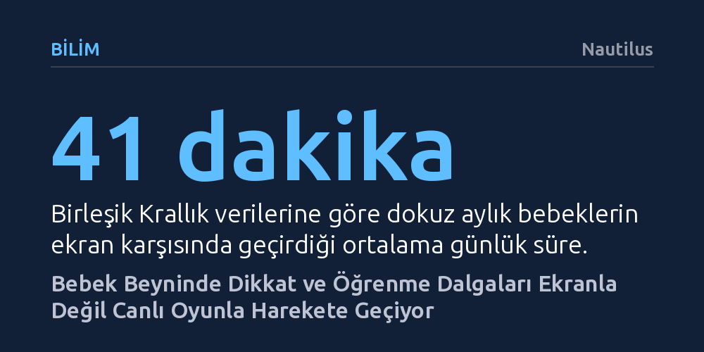

BILIM · Nautilus · 2026-10-16
EEG ölçümleri, bebeklerin ebeveynleriyle doğal oyun oynarken dikkat ve öğrenmeyle ilişkili beyin dalgalarının ekrana kıyasla çok daha güçlü etkinleştiğini gösteriyor. Otizmli çocuklarda da doğrulanan bu bulgu, birlikte izlense dahi ekranların canlı etkileşimin yerini tutamayacağını kanıtlıyor.
Ebeveyn eşliğinde izlense bile ekranların, canlı oyunun bebek beyninde yarattığı dikkat ve öğrenme uyarımını sağlayamayacağını gösterir.

Ebeveynlerin yoğun anlarında çocuklarını oyalamak için akıllı telefonlara veya televizyon ekranlarına başvurması günümüzde sıradan bir alışkanlık haline geldi. Özellikle dokuz aylık bebeklerin günde ortalama kırk dakikadan fazla ekrana baktığını gösteren güncel veriler, dijital cihazların bir tür bakıcı olarak hayatın merkezine yerleştiğini kanıtlıyor. Ancak erken çocukluk döneminde beyin gelişimi üzerine çalışan uzmanlar, bu durumun zihinsel süreçlere etkisini uzun süredir sorguluyor.
Yıllardır sürdürülen gelişimsel psikoloji araştırmaları, bebeklerin dili ve sosyal becerileri en iyi yaparak, yaşayarak ve doğrudan yüz yüze iletişim kurarak öğrendiğini gösteriyor. Bebek beyni, tek taraflı bir görsel akıştan ziyade karşısındaki yetişkinin mimiklerine, anlık sesli tepkilerine ve paylaşılan ortak dikkate ihtiyaç duyuyor. Ekranlar renkli ve hareketli içeriklerle dikkat çekse de, canlı bir insanın sunduğu çift yönlü etkileşim dinamizmini taklit etmekte yetersiz kalıyor.
Northwestern Üniversitesi araştırmacıları, ekran süresi ile canlı etkileşimin bebek beynindeki karşılığını doğrudan incelemek için klasik laboratuvar kalıplarını kıran bir yöntem benimsedi. Geleneksel çalışmalarda bebeklere yapay hoparlörlerden yabancı sesler dinletilir veya ekranda siyah-beyaz donuk yüz fotoğrafları gösterilirdi. Bu kez araştırmacılar 22 ila 44 aylık bebekleri ebeveynleriyle birlikte laboratuvara davet ederek onlara kitaplar, yapbozlar ve oyuncaklar sundu; ailelerden yalnızca evlerindeki gibi doğal bir oyun ortamı kurmalarını istedi.
Bu süreçte bebeklerin kafasına yerleştirilen elektroensefalogram (EEG) başlıkları sayesinde, doğal oyun anlarındaki beyin dalgaları ile televizyon izledikleri anlardaki dalgalar karşılaştırıldı. Ebeveynlerin de başlık takması sağlanarak bebeklerin ortama alışması kolaylaştırıldı ve böylece gerçek hayatı yansıtan doğal veri toplama koşulları sağlandı.
Elde edilen EEG sonuçları, dikkat, sosyal katılım ve öğrenmeyle doğrudan ilişkili belirli beyin dalgalarının, bebek bir yetişkinle etkileşim halindeyken çok daha güçlü şekilde etkinleştiğini ortaya koydu. Çocuk ekrana bakarken, ebeveyni hemen yanında oturup onunla birlikte izlese dahi aynı zihinsel uyarım seviyesine ulaşılamadı.
Araştırmacılar, bu farkın temelinde ortak dikkat mekanizmasının yattığını vurguluyor. Bebek ile ebeveynin bir yapboz parçası ya da bir resimli kitap üzerinde sırayla hamle yapıp birbirlerinin tepkilerine anında karşılık vermesi, beyni pasif bir tüketim modundan çıkarıp aktif bir öğrenme durumuna sokuyor. Bu durum, çocuğun sadece ekrana bakıp bakmamasıyla değil, kurulan ilişkinin niteliğiyle doğrudan ilişkili.
Araştırmanın en çarpıcı bulgularından biri, otizm tanısı almış çocukların da dahil edildiği ikinci grupta görüldü. Otizmli çocukların doğal etkileşim anlarında, gelişimsel olarak tipik çocuklarla birebir aynı beyin dalgası örüntülerini sergilediği saptandı. Bu sonuç, önceki laboratuvar deneylerinde otizmli çocuklarda gözlenen bazı algısal farklılıkların, çocukların doğasından değil, deney ortamlarının aşırı yapay ve kısıtlayıcı olmasından kaynaklanabileceğini düşündürüyor.
Uzmanlar, bu bulguların ekranların tamamen zararlı olduğu anlamına gelmediğini, ancak öğrenme sürecinde insan etkileşiminin eşsiz değerini ortaya koyduğunu belirtiyor. Amerikan Pediatri Akademisi'nin iki yaş altı için sıfır ekran önerisi de bu canlı iletişimin yerini hiçbir dijital aracın tutamayacağı gerçeğine dayanıyor. Araştırmanın bir sonraki aşaması ise ebeveyn ve çocuğun beyin dalgalarının etkileşim sırasında nasıl senkronize olduğunu anlamaya odaklanacak.